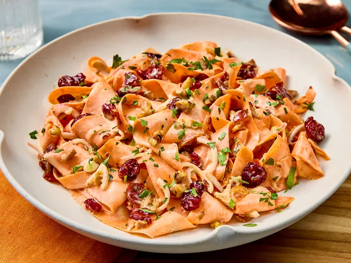

Carrot ribbon salad

A light and visually appealing dish made by shaving carrots into thin, ribbon-like strips using a vegetable peeler or mandoline. These delicate ribbons are often tossed with a tangy vinaigrette, which might include ingredients like lemon juice, olive oil, honey, or vinegar.
Ingredients
- 1/4 cup mayonnaise
- 1 1/2 tablespoons white sugar
- 1 tablespoon apple cider vinegar
- 1/4 teaspoon kosher salt
- 4 carrots, peeled into wide ribbons using a vegetable peeler (about 4 cups)
- 1/3 cup crumbled cooked bacon
- 1/3 cup thinly sliced shallots
- 3 tablespoons dried sweetened cranberries
- 3 tablespoons honey-roasted pecan pieces
- 2 tablespoons chopped fresh flat-leaf parsley, plus more for garnish
Steps
- Gather all ingredients.
- Whisk together mayonnaise, sugar, vinegar, and salt in a 1-quart container with a lid.
- Add carrots, bacon, shallots, cranberries, pecan pieces, and parsley; cover and shake until carrots are evenly coated in mayonnaise mixture.
- Transfer to a serving bowl and garnish with parsley.
Home